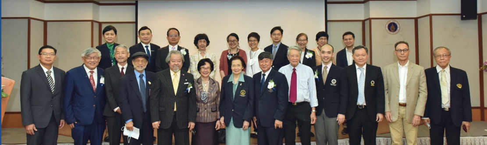

ตารางเวลาการอบรม
วันพฤหัสบดีที่ 17 ธันวาคม พ.ศ. 2563 (บรรยาย-ปฏิบัติการ)
| Time | Program |
|---|---|
| 08.30-09.00 | Registration |
| 09.00-09.10 | Open ceremony |
| 09.10-10.00 | Key note: The principle and practices of bacterial genotyping by WGS. โดย ศ.นพ.ประสิทธิ์ ผลิตผลการพิมพ์ |
| 10.00-10.50 | Talk 1: Whole genome sequencing services โดย ศ.เกียรติคุณ ดร. วสันต์ จันทราทิตย์ |
| 10.50-11.00 | coffee break |
| 11.00-12.00 | Talk 2: Overview of Genomics โดย ดร. ภากร เอื้ยวสกุล |
| 12.00-13.00 | รับประทานอาหารกลางวัน |
| 13.00-14.00 | Talk 3: Pathogen discovery and identification by using SNP barcodes โดย นาย ยุทธพงษ์ ถาวรวัฒนะ |
| 14.00-14.15 | coffee break |
| 14.15-16.00 | Lab 1: SNP calling from FASTQ files Q&A กับ ศ.นพ.ประสิทธิ์ ผลิตผลการพิมพ์ และ ศ.เกียรติคุณ ดร. วสันต์ จันทราทิตย์ |
วันศุกร์ที่ 18 ธันวาคม พ.ศ. 2563 (ปฏิบัติการ)
| Time | Program |
|---|---|
| 9.30-10.30 | Talk 4: Overview of phylogenetics and systematics โดย ดร. ภากร เอี้ยวสกุล |
| 10.30-10.45 | coffee break |
| 10.45-12.00 | Lab 2: Build Phylogenetic tree -IQ -TREE + FigTree |
| 12.00-13.00 | รับประทานอาหารกลางวัน |
| 13.00-13.30 | Talk 5: Ancestral reconstruction โดย ดร. ภากร เอี้ยวสกุล |
| 13.30-14.30 | Lab 3: Ancestral reconstruction -MEGA |
| 14.30-14.45 | coffee break |
| 14.45-15.45 | Lab 3: Ancestral reconstruction -MEGA (Cont.) |
| 15.45-16.00 | พิธีปิดงานประชุม |